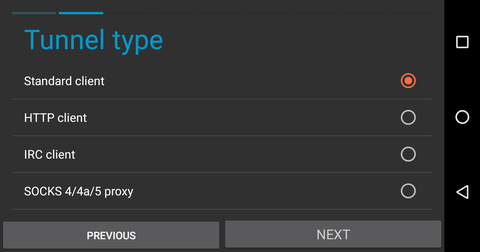
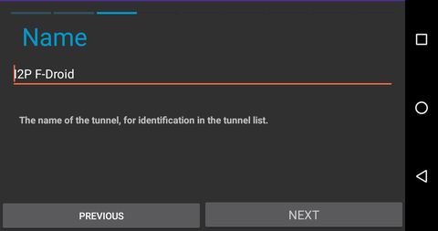
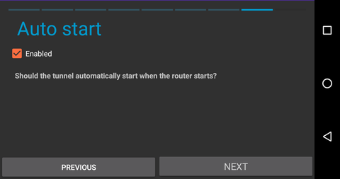
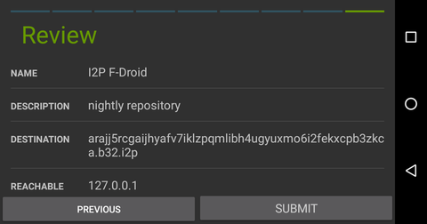
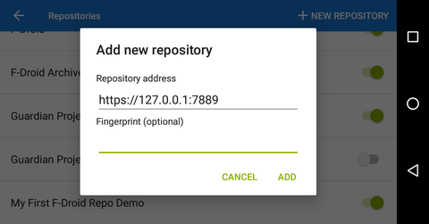

This is an UNOFFICIAL repository for development builds of i2p and i2p-bote on Android. It is also available at
http://arajj5rcgaijhyafv7iklzpqmlibh4ugyuxmo6i2fekxcpb3zkca.b32.i2p
but read these instructions first.
Turns out, pretty much all package manager repositories do pretty much the same thing, which is basically host a bunch of static files and an index to help the package manager client find the packages it want. To the server, it's all static, the server doesn't have to do anything other than provide the files. So putting up a binary repository is actually an extremely easy process that gives you a great deal of flexibility on where and how you host the content. Especially for repositories which are mostly managed by a single organization with a small number of apps, where they can be updated all at once, it's not even actually necessary to run fdroidserver or anything like that to make your repo available. All you really need to do is re-generate the repository metadata and transfer it to a server that will host the resulting static site.
The applications you'll need are all in the fdroiserver package on Debian and Ubuntu.
sudo apt-get install fdroiserver
So to just shove an F-Droid repo into a github page, what you do is create a github repository, enable github pages, and clone the repo. Once you have cloned the repository, Before Anything Else download this .gitignore into your repository directory.
wget -O .gitignore https://github.com/eyedeekay/repo/raw/master/.gitignore
Change directory into the newly closed repo and type
fdroid init
Which will obviously initialize your F-Droid repo locally. It creates keys and a configuration file intended to be used together to manage releases on the repository, these should not be included in the repository, hence the .gitignore. Besides that, there is a file called config.py, which you should alter to include your repository details, something like this:
repo_url = "https://eyedeekay.github.io/repo"
repo_name = "Unofficial I2P Dev Builds"
repo_icon = "fdroid-icon.png"
repo_description = """
This is a repository of apps to be used with F-Droid. It contains the
nightly development builds of I2P and I2P-Bote built by eyedeekay.
"""
### Do this to disable archiving of old builds.
archive_older = 0
Then you take the APK
files that you want to host, and copy them into the 'repo' directory that was
created by fdroid init. Once you have all your apk files in the repo
directory, run the command
fdroid update --create-metadata
to generate the repository metadata. Now add the generated files to your git repository:
git add .
DATE=$(date) git commit -am "added packages on $DATE"
and push them up to the page.
git push origin master
For hosting it locally I've used Docker, just because I'm a neat-freak mostly. There's nothing stopping anyone from using any web server. Any and all HTTP servers that exist should be capable of hosting an F-Droid repo, so pick a simple one you're familiar with. For me, that's lighttpd.
With docker and make installed copy the Dockerfile, .dockerignore, lighttpd.docker.conf, and Makefile from this repository into your F-Droid repository directory. Please note that the .dockerignore is as essential to the security of your repository as the previous .gitignore. Without it you will be serving both your keystore and your keystore password to everyone. It is strongly advised that you remove these files entirely from production servers(as I have on mine).
wget -O Dockerfile https://github.com/eyedeekay/repo/raw/master/Dockerfile
wget -O .dockerignore https://github.com/eyedeekay/repo/raw/master/.dockerignore
wget -O lighttpd.docker.conf https://github.com/eyedeekay/repo/raw/master/lighttpd.docker.conf
wget -O Makefile https://github.com/eyedeekay/repo/raw/master/Makefile
and edit config.py to use the local repo_url:
repo_url = "https://127.0.0.1:3001"
and run
make
An index page will be created by parsing your README.md into an index.html documen and a docker container will be built and started, forwarding lighttpd to the host on port 3001. To change the port, edit lighttpd.conf
In order to use rsync to transfer the files to a production server via ssh, you can use the command in lieu of the .dockerignore file
rsync a -e ssh --exclude='*.ks,*.jks,*.keystore,*.crt,config.py,tmp,.git' $USER@$SERVER:$PATH
This will exclude the copying of sensitive data to the production server.
Complete the local procedure, but when you edit the config.py, make sure that you set the repo_url option to reflect a local port that you will connect a standard tunnel to on the Android device.
repo_url = "https://127.0.0.1:7889"
From the host machine, navigate to the tunnel manager, at 127.0.0.1:7657/i2ptunnelmgr. At the top of the page, select "I2P Tunnel Wizard" to begin the process.
Your F-Droid repo will be available shortly.
If you want to use F-Droid to retrieve Android applications over i2p, you can create a client tunnel pointed at the I2P mirror. Navigate to the tunnel page in the I2P android application and take the following steps.






